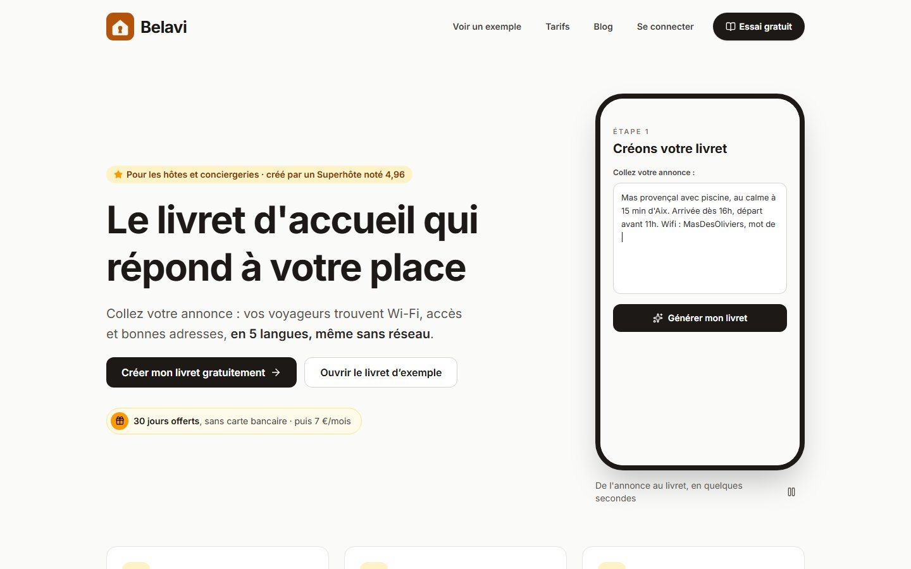
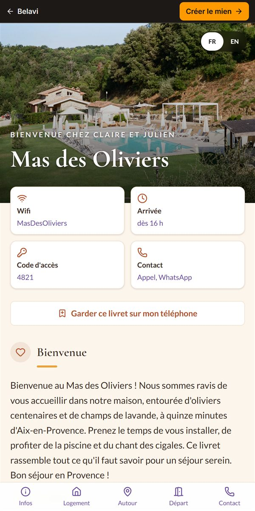
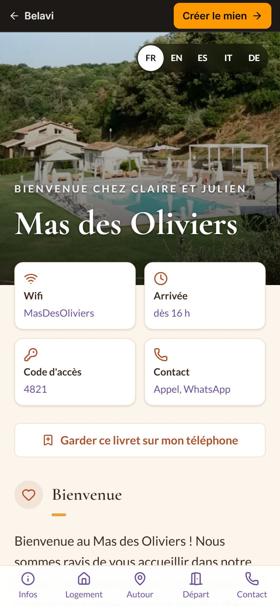
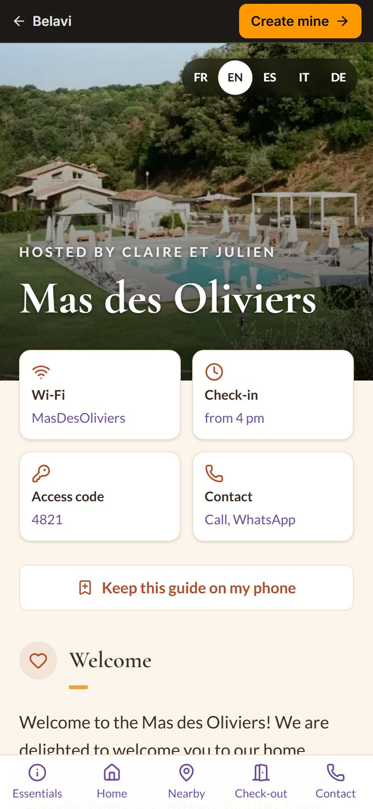
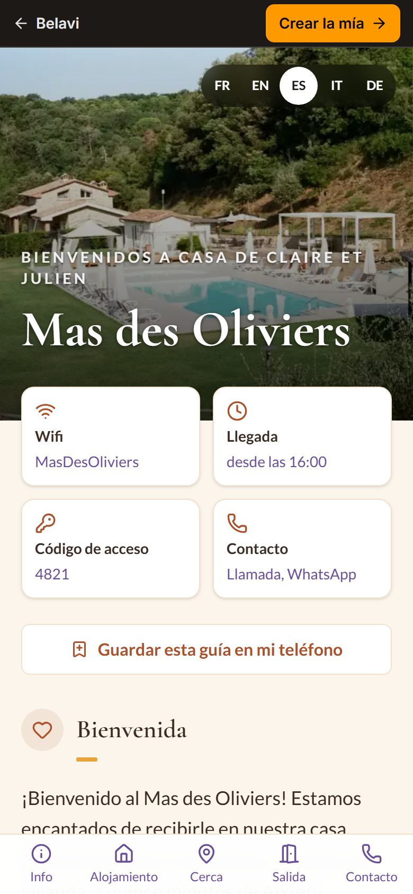
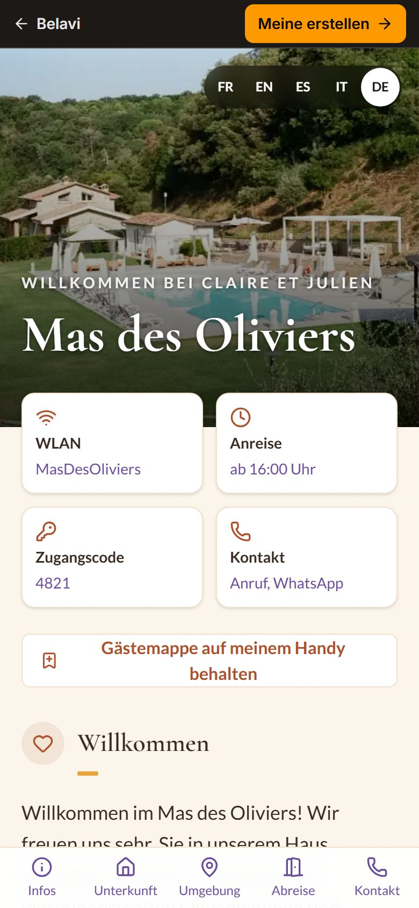
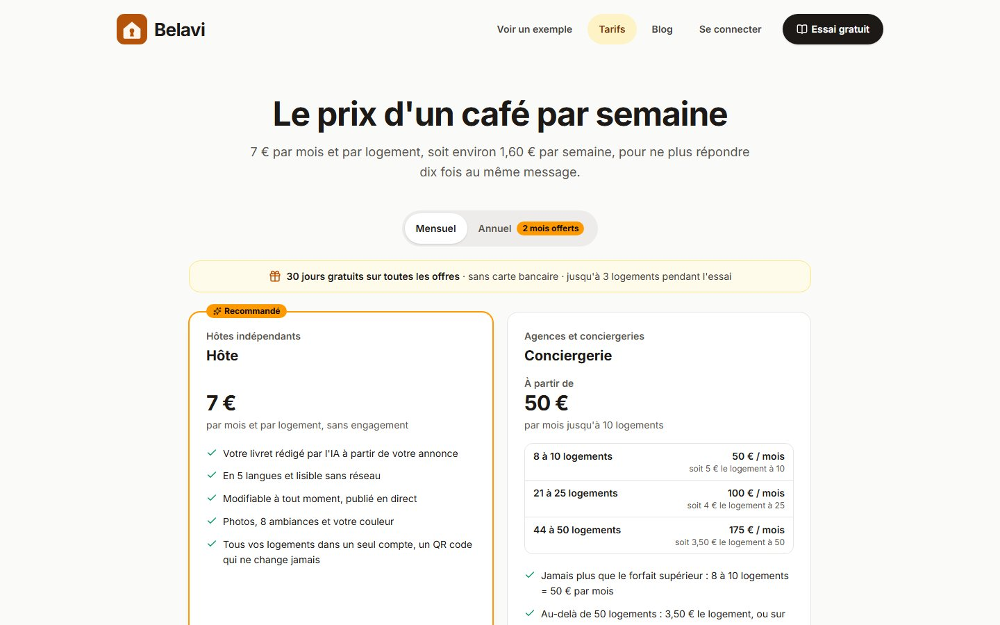
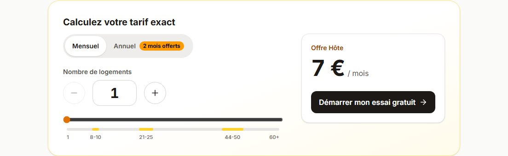

13 j
Du premier code au paiement en ligne
Premier commit le 7 octobre, paiement Stripe réel activé le 20 octobre 2026.
Antoine Balesi
Belavi est un livret d’accueil digital pour les locations courte durée : l’hôte colle le texte de son annonce, l’IA rédige le livret, et le voyageur le consulte sur son téléphone grâce à un QR code. Un projet que j’ai porté seul, de l’idée au produit en ligne et prêt à encaisser, en parallèle de mon Mastère.
Après trois ans à co-gérer un logement sur Airbnb, je connais bien le quotidien d’un hôte : les mêmes questions reviennent sans arrêt — le wifi, l’heure d’arrivée, le code de la boîte à clés, le départ — souvent tard le soir. Les livrets papier ou PDF sont vite obsolètes, peu lisibles sur mobile et rarement traduits.
Les outils qui existent sont souvent en anglais et demandent de tout saisir à la main. L’idée de Belavi : partir de ce que l’hôte a déjà écrit — son annonce — et laisser l’IA faire le gros du travail, avec une interface simple, d’abord en français, pensée pour des hôtes et des conciergeries qui ne sont pas techniques. Depuis, le livret lui-même se lit en cinq langues, pour les voyageurs qui n’ont pas le français.
Chiffres relevés au 14 novembre 2026.
13 j
Du premier code au paiement en ligne
Premier commit le 7 octobre, paiement Stripe réel activé le 20 octobre 2026.
~1 ct
Coût de l’IA par livret
Environ 0,01 $ par génération, mesuré sur une vraie annonce : un coût maîtrisé.
5
Langues du livret
Français, anglais, espagnol, italien, allemand : traduit automatiquement après publication, lisible sans réseau.
8
Livrets de démonstration
Du chalet à la villa, chacun avec sa propre ambiance et ses traductions.
311
Tests automatiques
Rejoués à chaque modification pour éviter qu’un correctif en casse un autre.
26
Pages publiques
Accueil, tarifs, démo, blog, pages légales : toutes vérifiées avant la prospection.
Un vrai enregistrement du site : l’annonce est collée, le livret est généré, puis consulté sur téléphone. Sans son.
Envie de l’essayer ? Ouvrez un livret d’exemple et changez de langue en haut de l’écran.
Ouvrir un livret d’exemple →Analyse de la concurrence (Touch Stay, Hostfully), choix des cibles et de la promesse : les conciergeries comme client principal, les hôtes indépendants pour faire connaître l’outil, avec un lancement en Provence et un accompagnement humain comme différence.
Création de la marque : choix du nom, achat du domaine belavi.fr, logo et identité visuelle, message d’accueil « Le livret d’accueil qui répond à votre place ».

Un livret pensé mobile d’abord : les infos essentielles (wifi, arrivée, code d’accès, contact) en haut, une navigation par onglets, trois ambiances au choix de l’hôte, et un changement de thème qui ne touche jamais au contenu.
Le livret est disponible en cinq langues (français, anglais, espagnol, italien, allemand) et s’ouvre dans celle du téléphone. Les traductions sont faites automatiquement après la publication, puis mises à jour quand l’hôte modifie son texte.
Il reste consultable sans connexion une fois ouvert, et peut être gardé sur l’écran d’accueil avec l’icône du logement.





L’hôte colle sa description ou ajoute jusqu’à cinq captures d’écran ; l’IA Claude remplit le livret, puis signale ce qui manque avec une liste « à compléter ».
Une règle non négociable guide tout le projet : l’IA n’invente jamais une information pratique (code, horaire, téléphone, adresse). Si elle ne la trouve pas, elle la laisse vide et la signale. Un plafond de générations protège aussi le budget.

Construction de l’offre : essai gratuit de 30 jours sans carte bancaire, puis 7 € par mois et par logement (70 € à l’année). Pour les conciergeries, une grille dégressive avec des forfaits plafonnés (par exemple 50 € de 8 à 10 logements), un simulateur de tarif sur la page Tarifs, la marque blanche et un mode pilote. Un livret « clé en main » reste réalisable via Horizon Digital.
Paiement et abonnements avec Stripe, calcul des coûts et du seuil de rentabilité, puis mise en conformité : mentions légales, politique de confidentialité, conditions d’utilisation et conditions générales de vente.


Je ne suis pas développeur de métier : j’ai construit Belavi avec Claude Code, en rédigeant moi-même le cahier des charges, puis en avançant phase par phase, en testant et en validant chaque étape avant la suivante. Le site repose sur Next.js, l’API Claude, Supabase (données hébergées en Europe), Stripe et Vercel.
Pour prendre du recul, j’ai fait réaliser un audit complet du site (technique, SEO, accessibilité, sécurité, légal, conversion) et corrigé les premiers points. Le site a aussi son blog, sa Search Console et une mesure d’audience sans cookies.
Lire le journal de bord des 13 jours →Partir d’un problème vécu, choisir une cible et prioriser ce qui compte pour une première version.
Mettre l’IA au service d’un usage réel, avec des garde-fous et un coût mesuré.
Fixer des prix, calculer les coûts fixes et le nombre d’abonnés nécessaires pour être rentable.
Piloter un développement web complet et intégrer paiement, données personnelles et CGV.
L’IA change ce qu’une seule personne peut construire. Mais elle ne remplace pas les décisions : à qui on s’adresse, ce qu’on promet, ce qu’on facture, et ce qu’on refuse de laisser faire à la machine. Ce sont ces choix-là qui ont pris le plus de temps.
J’ai aussi découvert tout ce qui entoure un produit : la protection des données, les conditions de vente, la sécurité du paiement, le coût de chaque appel à l’IA. Lancer un SaaS, c’est autant du droit et de la gestion que du code.
Le produit est en ligne et prêt à encaisser, avec un livret en cinq langues, des tarifs adaptés aux conciergeries et une vidéo de démonstration. La suite est commerciale : faire tester Belavi à des hôtes et convaincre les premières conciergeries, en parallèle de mon Mastère et de ma recherche de stage ou d’alternance.